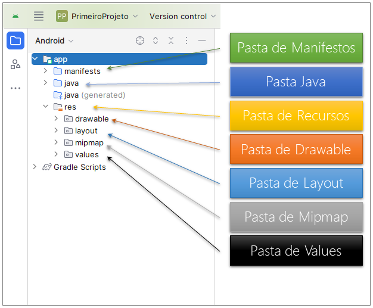
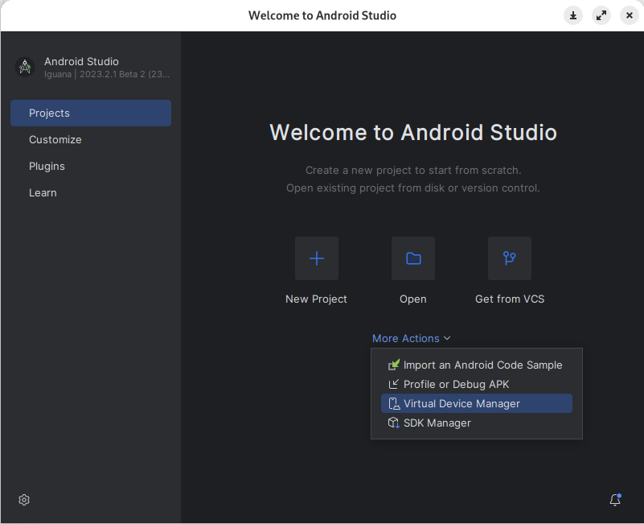

Disciplinas
DESENVOLVIMENTO PARA DISPOSITIVOS MÓVEIS. Concluído
Materiais
Neste módulo, você aprendeu sobre a estrutura do Android, o ambiente de desenvolvimento Android Studio e o uso dos emuladores.
Conhecer a estrutura de pastas de um projeto de aplicativo é fundamental para qualquer programador. A estrutura de pastas segue uma convenção que organiza o código-fonte, recursos e configurações de maneira lógica. Além disso, uma estrutura de pastas bem organizada torna mais fácil a manutenção do código.
A Figura 1 apresenta a estrutura básica de qualquer projeto nativo para ambiente Android. Estão destacados os nomes das principais pastas do projeto.

Figura 1 - Estrutura de Pastas - Projeto de Aplicativo Android
Descrição da imagem
A imagem mostra a estrutura de pastas de um projeto Android, dentro do Android Studio. À esquerda, há uma visualização da árvore de pastas do projeto, destacando a pasta principal chamada "app". Dentro dessa pasta, há subpastas como "manifests", "java", "java (generated)", e "res". Dentro da pasta "res", estão outras subpastas: "drawable", "layout", "mipmap", e "values".
À direita da estrutura de pastas, há uma legenda colorida com caixas que correspondem a cada uma dessas pastas. As cores e suas respectivas pastas são as seguintes:
- Verde para "Pasta de Manifestos" (representando a pasta "manifests"),
- Azul para "Pasta Java" (representando a pasta "java"),
- Amarelo para "Pasta de Recursos" (representando a pasta "res"),
- Laranja para "Pasta de Drawable" (representando a subpasta "drawable"),
- Azul claro para "Pasta de Layout" (representando a subpasta "layout"),
- Cinza para "Pasta de Mipmap" (representando a subpasta "mipmap"),
- Preto para "Pasta de Values" (representando a subpasta "values").
Conteúdo
Linhas coloridas conectam as caixas da legenda à pasta correspondente na estrutura de diretórios à esquerda, ajudando a identificar visualmente cada parte do projeto.
Sua tarefa é explorar a estrutura do projeto de aplicativos Android e explicar cada uma das pastas.
Orientações para elaboração e entrega da atividade:
- Abra o Android Studio.
- Crie um projeto escolhendo a opção “Empty Views Activity”.
- Explore na estrutura do projeto cada uma das 7 pastas destacadas na figura.
- Elabore um texto explicando a utilidade e a importância dos arquivos que podem fazer parte de cada uma das pastas.
- Crie um parágrafo por pasta.
- Escreva o texto diretamente no espaço da atividade do AVA.
Resolução
...- Abra o Android Studio.
- Crie um projeto escolhendo a opção “Empty Views Activity”.
- Explore na estrutura do projeto cada uma das 7 pastas destacadas na figura.
- Elabore um texto explicando a utilidade e a importância dos arquivos que podem fazer parte de cada uma das pastas.
- Crie um parágrafo por pasta.
- manifests:
- Pasta que contém o AndroidManifest.xml, esse arquivo define:
- Permissões exigidas pelo app, ex.: câmera, localização.
- Componentes do app (activities, services, broadcast receivers).
- Versão mínima do android compatível.
- java:
- Pasta que armazena todo o código-fonte em Java/Kotlin do projeto:
- Classes. Ex.: MainActivity.
- Lógica de negócio, código que controla a interação com o usuário e dados.
- Pacotes, que organizam o código por funcionalidades.
- res:
- Pasta que agrupa os recursos no-code, como imagens, layouts e strings. É dividida em subpastas (drawable, layout, mipmap, values).
- drawable:
- Pasta que armazena arquivos de imagem e shapes XML usados na interface. Ex.: ícones de btn, backgrounds.
- layout:
- Pasta que contém arquivos XML que definem a estrutura das telas. Ex.: activity_main.xml. Esses arquivos são usados para criar a UI do app.
- mipmap:
- Pasta que guarda os ícones do app em diferentes densidades de tela. Ex.: hdpi, xhdpi, etc. O android usa automaticamente a versão adequada para cada dispositivo.
- values:
- Pasta que contém arquivos XML para centralizar configurações, como:
- strings.xml: Textos usados no app.
- colors.xml: Cores padrão do app.
- styles.xml: Temas e estilos reutilizáveis.
- Escreva o texto diretamente no espaço da atividade do AVA.
